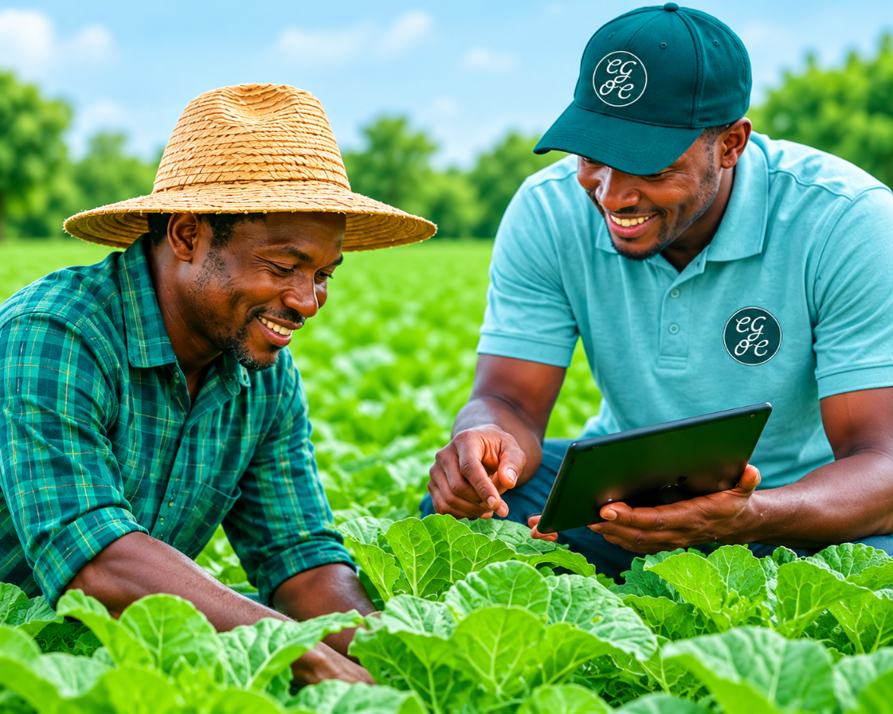
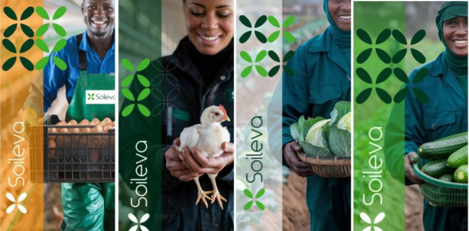

01
Vegetable
Crop protection and seed solutions that help vegetable farmers establish healthy crops, manage production challenges and work towards better harvests.

C.G. OKAFOR CO. BUSINESS
We develop and provide practical agricultural solutions that help vegetable, poultry and swine farmers protect their crops, care for their animals and improve farm performance.
Discover what we doWHO WE ARE
Okafor Agriscience develops and provides solutions for animal health, crop protection and seed. We focus on the needs of vegetable growers and poultry and swine farmers, bringing together useful products, practical knowledge and solutions that support better farming.
Our work is guided by the realities of the farm: keeping crops healthy, supporting animal wellbeing and helping farmers make informed choices.
OUR AREAS OF FOCUS
Our solutions are developed around three key areas of crop and livestock farming.
Crop protection and seed solutions that help vegetable farmers establish healthy crops, manage production challenges and work towards better harvests.
Animal health solutions and practical support to help poultry farmers protect their birds, prevent health challenges and maintain productive flocks.
Animal health solutions and practical support for pig farmers, helping them protect herd health and improve day-to-day production.
WHAT WE PROVIDE
From the seed that starts a crop to the health of animals on the farm, we focus on solutions that address important production needs.

Solutions that support the health and wellbeing of poultry and swine, including approaches to disease prevention and better livestock management.
Solutions that help vegetable growers manage weeds, pests and diseases while protecting crop health and production.
Seed solutions selected and evaluated with the needs of vegetable farmers and the demands of local growing conditions in mind.
HOW WE DEVELOP BETTER SOLUTIONS
We do not rely on assumptions alone. Research, field trials and practical testing help us understand farming challenges, compare different approaches and improve the solutions we develop and provide.
Identify the challenges farmers face in crops and livestock.
Use trials and evidence to assess products and practical approaches.
Use what we learn to strengthen products, practices and solutions.
EXPLORE OUR PRODUCTS
Explore agricultural products and supplies through Soileva Farmcare, our retail destination for farming inputs and solutions.
View Products